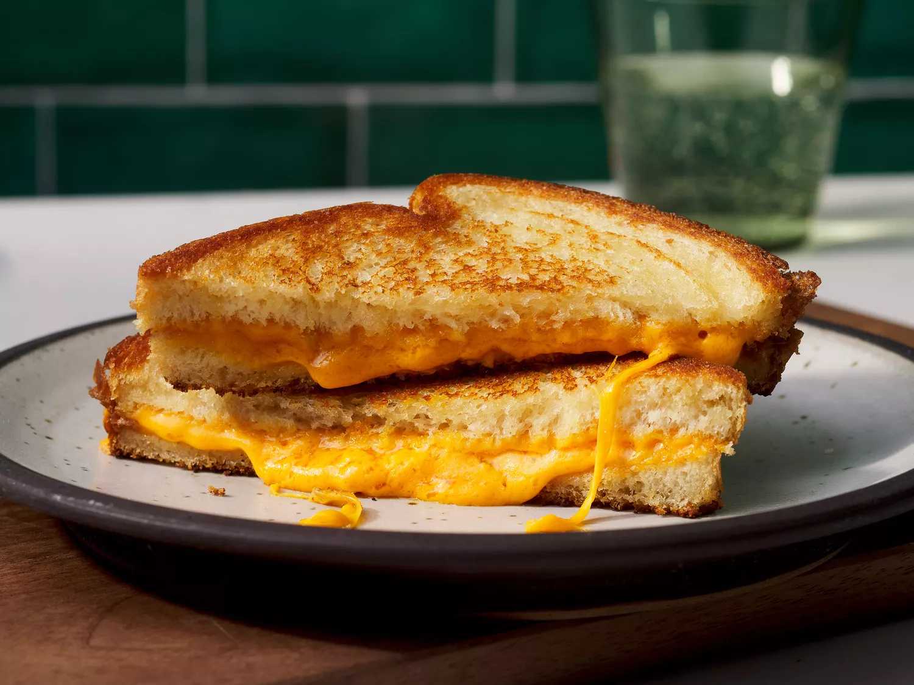

Grilled Cheese Sandwich Recipe

Description
A grilled cheese sandwich is a classic comfort food that is quick and easy to make. It is made with two slices of bread and cheese that are grilled until the bread is golden brown and the cheese is melted. Grilled cheese sandwiches are perfect for a quick lunch or dinner and can be customized with different types of bread and cheese.
Ingredients
- 4 slices white bread
- 3 tablespoons butter, divided
- 2 slices Cheddar cheese
Steps
- Gather all ingredients.
- Preheat a nonstick skillet over medium heat. Generously butter one side of a slice of bread.
- Place bread butter-side down in the hot skillet; add 1 slice of cheese.
- Butter a second slice of bread on one side and place butter-side up on top of cheese.
- Cook until lightly browned on one side; flip over and continue cooking until cheese is melted.
- Repeat with remaining 2 slices of bread, butter, and slice of cheese. Serve and enjoy!
Home